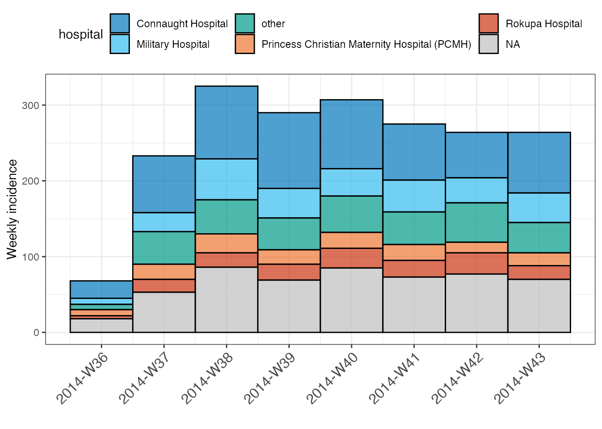

Customizing incidence plots
Tim Taylor, Thibaut Jombart and Zhina N. Kamvar
Source:vignettes/customizing_incidence_plots.Rmd
customizing_incidence_plots.RmdThis vignette provides some tips for the most common customisations of graphics produced by plot.incidence(). Our graphics use ggplot2, which is a distinct graphical system from base graphics. If you want advanced customisation of your incidence plots, we recommend following an introduction to ggplot2 such as R for Data Science.
Example data: simulated Ebola outbreak
This example uses the simulated Ebola Virus Disease (EVD) outbreak from the package outbreaks: ebola_sim_clean.
First, we load the data, compute the weekly incidence and initially group by gender and hospital:
library(outbreaks) library(incidence2) dat <- ebola_sim_clean$linelist str(dat) #> 'data.frame': 5829 obs. of 11 variables: #> $ case_id : chr "d1fafd" "53371b" "f5c3d8" "6c286a" ... #> $ generation : int 0 1 1 2 2 0 3 3 2 3 ... #> $ date_of_infection : Date, format: NA "2014-04-09" ... #> $ date_of_onset : Date, format: "2014-04-07" "2014-04-15" ... #> $ date_of_hospitalisation: Date, format: "2014-04-17" "2014-04-20" ... #> $ date_of_outcome : Date, format: "2014-04-19" NA ... #> $ outcome : Factor w/ 2 levels "Death","Recover": NA NA 2 1 2 NA 2 1 2 1 ... #> $ gender : Factor w/ 2 levels "f","m": 1 2 1 1 1 1 1 1 2 2 ... #> $ hospital : Factor w/ 5 levels "Connaught Hospital",..: 2 1 3 NA 3 NA 1 4 3 5 ... #> $ lon : num -13.2 -13.2 -13.2 -13.2 -13.2 ... #> $ lat : num 8.47 8.46 8.48 8.46 8.45 ... i <- incidence(dat, date_index = date_of_onset, interval = 7, groups = c(gender, hospital))
plot.incidence()
When calling plot on an incidence() object, the function plot.incidence() is implicitly used. To access its documentation, use ?plot.incidence. In this section, we illustrate existing customisations.
Default behaviour
By default, the function uses colors from the color palette vibrant(). If no fill is specified, groups will all be filled with the same color and a message will be displayed due to multiple groups being present:
i %>% plot() #> plot() can only stack/dodge by one variable. #> For multi-facet plotting try facet_plot()

Note, however, that the groups are still present just hidden by the default border coloring:
i %>% plot(color = "white") #> plot() can only stack/dodge by one variable. #> For multi-facet plotting try facet_plot()

Additional arguments
plot.incidence() is designed for a high level of customization without needing knowledge of ggplot2. To this end, there are multiple arguments that can be provided which have been set to sensible defaults. Some common changes you may wish to make are illustrated below (for a full description of arguments check out the accompanying help file ?plot.incidence).
We can easily fill the plot according to the groups present or a color of our choosing:
i %>% plot(fill = gender) #> plot() can only stack/dodge by one variable. #> For multi-facet plotting try facet_plot()

i %>% plot(fill = hospital, legend = "bottom") #> plot() can only stack/dodge by one variable. #> For multi-facet plotting try facet_plot()

i %>% plot(fill = "red") #> plot() can only stack/dodge by one variable. #> For multi-facet plotting try facet_plot()

Sometimes we may wish to change the formatting and rotation of the x-axis and this can be done by passing additional arguments for use by scale_x_incidence():
i %>% plot(group_labels = FALSE, format = "%a %d %B %Y", angle = 45) #> plot() can only stack/dodge by one variable. #> For multi-facet plotting try facet_plot()

Applying the style of European Programme for Intervention Epidemiology Training (EPIET)
For small datasets it is convention of EPIET to display individual cases as rectangles. It can be done by doing two things: first, adding using the option show_cases = TRUE with a white border. We also add coord_equal = TRUE which forces each case to be a square.
i_epiet <- incidence(dat[160:180, ], date_index = date_of_onset) i_epiet %>% plot(color = "white", show_cases = TRUE, coord_equal = TRUE, angle = 45, size = 12)

facet_plot()
With stacked plots it can be difficult to ascertain difference between groups. For this reason we provide users the ability to make faceted plots with the facet_plot() function. This function takes similar arguments to plot() but includes an additional facet argument:
i %>% facet_plot(facets = gender, n_breaks = 3) #> plot() can only stack/dodge by one variable. #> For multi-facet plotting try facet_plot()

i %>% facet_plot(facets = hospital, fill = gender, n_breaks = 3, nrow = 4) #> plot() can only stack/dodge by one variable. #> For multi-facet plotting try facet_plot()

i %>% facet_plot(facets = gender, fill = "grey") #> plot() can only stack/dodge by one variable. #> For multi-facet plotting try facet_plot()

Miscellaneous
Centreing labels
By default plots made with the incidence2 package position the date labels to the left side of any grouping. Sometimes it can be desirable to centre the labels within the bin and we make this possible providing that the interval is one of one week, one month, one quarter or one year:
x <- incidence(dat, date_index = date_of_onset, first_date = as.Date("2014-10-01") - 25, last_date = as.Date("2014-10-01") + 25, groups = hospital, interval = "week") #> 3803 observations outside of [2014-09-06, 2014-10-26] were removed. plot(x, fill = hospital, color = "black", n_breaks = nrow(x), angle = 45, size = 12, centre_labels = TRUE, legend = "top")

Changing colors
The default palette
A color palette is a function which outputs a specified number of colors. By default, the color used in incidence is called vibrant(). Its behaviour is different from usual palettes, in the sense that the first 6 colours are not interpolated:
par(mfrow = c(2, 1), mar = c(4,2,1,1)) barplot(1:6, col = vibrant(6)) barplot(1:20, col = vibrant(20)) #> Using more colors (20) than this palette can handle (6); some colors will be interpolated. #> Consider using `muted` palette instead?

We also provide a second palette called muted() where the first 9 colours are not interpolated:
par(mfrow = c(2,1), mar = c(4,2,1,1)) barplot(1:9, col = muted(9)) barplot(1:20, col = muted(20)) #> Using more colors (20) than this palette can handle (9); some colors will be interpolated.